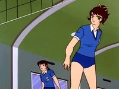
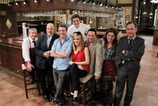
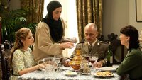
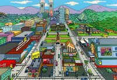
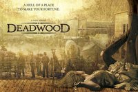
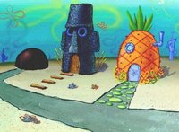
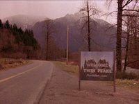
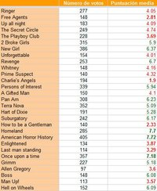

'La panda de Julia', Nostalgia TV
Sun, 27 Nov 2011 08:30:28 GMT

Corrían los años 90 cuando, en los parques y colegios, se empezó a ver a niños practicando un deporte que nunca había tenido demasiada implantación en España: el voleibol. El entusiasmo popular se debió al éxito de las series infantiles que por aquel entonces había comenzado a emitir Telecinco y que apostaban por este deporte, títulos como ‘Dos fuera de serie’ o la que trataremos en el Nostalgia de hoy ‘La panda de Julia‘.
Acostumbrados a ver a las mujeres como personajes secundarios y con poca fuerza, sorprendió y gustó que una chica fuera la protagonista de una historia en la que, sorpresa, su objetivo no era casarse y formar una familia, sino triunfar en su profesión y convertirse en una deportista de élite. Bueno, para ser exactos, en la mejor deportista del mundo, para qué andarnos con chiquitas.
Dramático argumento
El argumento es el siguiente: Julia Jara (Kozue Ayuhara en la versión original) es una joven que, superados ciertos problemas de salud, llega a un nuevo instituto. Su sueño es entrar en el equipo de voleibol, hecho que consigue gracias a sus estupendas cualidades. Deberá superar la animadversión inicial de sus compañeras, en especial la de Elena, una chica procedente de una acaudalada familia que está acostumbra a triunfar en todo lo que se propone y que ve como una amenaza el talento de su nueva compañera. Las rivalidades se superarán y las chicas se convertirán en grandes amigas. Julia continuará avanzando en el mundo del voleibol hasta conseguir llegar a la final del mundial.
Para ser una serie infantil, ‘La panda de Julia’ no está exenta de toques “telenovelescos”: como muchas series anime, la protagonista aterriza en un ambiente hostil en el que (un poco incomprensiblemente, la verdad) todo el mundo la odia. Pero todo esto cambia rápidamente gracias a su alegría y a su buen hacer. El afán de superación marcará la trayectoria de Julia y le ayudará a conseguir sus objetivos.
Esto nos lleva a una estructura un tanto similar a la de ‘Oliver y Benji‘, en la que los personajes van sumando compañeros entre los que en un primer momento eran sus rivales más feroces. El valor de la amistad y el compañerismo tienen una fuerte presencia. Otro detalle que comparten son los momentos “espectaculares”, más propios de series fantásticas como ‘Dragon Ball‘. El “remate tornado” o “el balón que desaparece” son golpes maestros que Julia perfecciona en su carrera hacia el estrellato. El efecto que consigue dar al balón es un tanto mágico y tiene que ver con el deseo de ofrecer momentos fuertemente climáticos a los espectadores. Los personajes se transforman aquí en superhéroes más que en jugadores de voleibol.
Y no podemos olvidar ciertas secuencias que por su carga trágica conseguían que los entonces niños nos sintiéramos sobrecogidos ante lo que se suponía que era un serie meramente lúdica: la muerte del novio de Julia en un accidente de tráfico, mientras ella juega un partido trascendental, bien podría haber sido escrita para un capítulo de ‘Los ricos también lloran’. Otros dramáticos momentos se sucedían en los entrenamientos cuando, por ejemplo, las muñecas de Julia sangraban al golpear el balón mientras portaba unas cadenas que le ayudaban a incrementar su fuerza.

Origen del manga
La serie es una adaptación del manga de 12 volúmenes de Chickako Urano, publicado entre 1968 y 1970. Su puesta en marcha estuvo “animada” por la popularidad que consiguió el voleibol femenino japonés tras la consecución de la medalla de oro en los Juegos Olímpicos de Tokyo’64.
Con el título original de Attack no.1, la serie constó de 104 capítulos. Posteriormente, con los mismos personajes se rodaron cuatro películas y en 2005 se hizo una adaptación con imagen real para una serie de 11 episodios. El éxito de ‘La panda de Julia’ condujo a nuevos productos de similares características centrados en otros deportes, como ‘Raqueta de Oro‘ o ‘Piruetas‘, también emitidas por Telecinco.
La banda sonora también supuso un auténtico éxito y entró en la compilación ‘Campeones y tus amigos de Tele5‘ junto con temas de otras series infantiles que emitía la cadena en ese momento como ‘Supergol’ o las mencionadas ‘Oliver y Benji’ y ‘Dos fuera de serie’. Sol Pilas fue la intérprete del tema en español.
Ficha Técnica: La panda de Julia

-
Título Original: アタックNo.1 Atakku Nanbā Wan
-
Género: Animación. Anime. Infantil
-
Cadena: Fuji Tv (1969)
-
Emitida en España: Telecinco y Canal Sur
-
Disponibilidad DVD: Si
En ¡Vaya Tele! | Nostalgia TV

Europa condena a España por el exceso de publicidad en nuestra televisión
Fri, 25 Nov 2011 15:34:19 GMT
El cuento de nunca acabar: En España se emite demasiada publicidad, y desde Europa nos lo recuerdan. Y es que ayer jueves el Tribunal de Justicia de la Unión Europea ha condenado a España por no actuar ante las flagrantes violaciones de las normativas europeas sobre la regulación de la publicidad en las televisiones. Es decir: los famosos doce minutos de publicidad por hora natural de día que se extienden a diecisiete con los anuncios de autopromoción y que, como muchos ya suponíamos, las cadenas se los pasan por donde quieren.
Hay un par de puntos interesantes que se ven en la sentencia, ya que hay muchas cosas sobre esta normativa que no parecían estar demasiado claro. Como por ejemplo el hecho de que ese límite de doce minutos no se limitan al corte publicitario en sí, sino que incluye la multitud de “consejos comerciales” dentro de la emisión del programa. Recordemos que hoy en día es imposible ver un programa de televisión sin tragarte al presentador/colaborador de turno vendiéndote los cosméticos, la cerveza o el coche de turno.
Así pues el Tribunal Europeo declara que dentro de este límite se encuentran todo tipo de mensaje televisado remunerado (o con pago similar) promocionando una marca o empresa pública o privada incluyendo (y aquí va el segundo punto que quería destacar) los patrocinios. Los patrocinios parecían entrar en un terreno límite, pero según el Tribunal también entrarían, por lo que deberían ser regulados al igual que el resto de publicidad.
Personalmente, aunque la condena es más bien simbólica (se condena en costas), a mí me parece estupenda como toque de atención al gobierno (así, en general, como institución) para que ponga más atención a lo que se emita en las cadenas de televisión y empiece a tener mano dura con las cadenas de televisión que no hacen caso a las leyes. Si ven que las televisiones no cumplen con la normativa habría que actuar. El problema vendría con la solución: ¿tolerancia cero? ¿sanciones más duras que una pequeña multa que las cadenas están más que encantadas de pagar?
La verdad es que, más en el país en el que estamos, seria difícil comenzar a regular este tema de una manera más dura ¿hasta donde estaría el ejercicio de la ley y la intromisión del Estado/Europa en empresas privadas como los grandes conglomerados televisivos? Sé que no es un asunto con solución fácil y desde luego, aunque tengamos esta sentencia como base, dudo mucho que la situación de la publicidad en España cambie de hoy para mañana, pero creo sinceramente, que tanta publicidad sobra.
PD. Ya de paso deberían regular el tema de dar paso a una pausa de seis minutos, emitir dos de película/programa/serie y volver a cortar…
Vía | Europa Press
Más Info | Sentencia del Tribunal
En ¡Vaya Tele! | ¿Cuál es el límite del Product Placement?
Telecinco cancela 'Cheers' oficialmente
Thu, 24 Nov 2011 16:33:46 GMT

Lo que mal comienza, mal suele acabar. Éste es el caso de ‘Cheers’, que acaba de ser cancelada de manera oficial por Telecinco. La cadena ha tomado la decisión que todos esperábamos, después de ver cómo primero paralizaba el rodaje y después eliminaba de forma fulminante a la serie de su parrilla. La serie, por tanto, se despide tras siete capítulos, con seis aún sin emitir que, seguramente, nunca llegarán a ver la luz del día.
‘Cheers‘ nunca llegó a cuajar en las noches de la cadena de Fuencarral. Ni la audiencia ni (mucho menos) la crítica respaldaron este estreno, que fue un despropósito de principio a fin: un humor absurdo, una cabecera aún más absurda aún y unos actores que no estaban a la altura de un guión que, francamente, parecía brillar por su ausencia.
El hecho de que la retiraran para “darle una vuelta” a la serie y traerla con energías renovadas ya no nos hacía presagiar nada nuevo (suele ser un eufemismo al que las cadenas, tanto en España con en USA, recurren cuando el futuro de algo está muy en el aire). Y la breve nota de prensa que nos han enviado hoy lo confirma: el rodaje no se retomará al no encontrar “márgenes de viabilidad para su relanzamiento”. Vamos, lo que todos sabíamos y nos esperábamos. Tan claro como que no serán muchos los que la echen de menos.
En ¡Vaya Tele! | Telecinco retira ‘Cheers’ de la parrilla
'Frágiles' en Telecinco, las corridas de toros en TVE, Real Madrid TV en la TDT y más, In my Opinion (22)
Thu, 24 Nov 2011 10:00:10 GMT
Primer “In My Opinion” post-20N y aquí, de momento, no nos han hecho recortes; pero crucemos los dedos por si acaso, que no está el horno para bollos. Los primeros coletazos de la mayoría absoluta del Partido Popular ya se empiezan a ver, y mientras esperamos a ver en qué momento sustituye Cospedal a Ana Pastor al frente de ‘Los Desayunos de TVE’, ya tenemos declaraciones que hablan sobre un regreso de las corridas de toros a la pública. ¡Mátame camión!
Política aparte, el vigésimo segundo In My Opinion nos trae más temas televisivos que han sido de interés esta semana. Telecinco anunció por sorpresa el rodaje de una nueva serie titulada ‘Frágiles‘, la esperanza del drama en la cadena principal del Grupo Mediaset; pasando a la TDT, parece que el futuro canal que reemplazará a La 10 empieza a vislumbrarse, para decepción de los que no somos seguidores del fútbol en general o del Real Madrid en particular. Y como bonus, un divertidísimo vídeo que les encantará a los seguidores de ‘The Good Wife’, sin spoilers de ningún tipo.
‘Frágiles’, la nueva pecera de Telecinco con Santi Millán
Contábamos hace unos días en esta misma sección que Telecinco, con la oferta tan “peculiar” que tiene, no puede esperar que su audiencia mayoritaria se quede a ver un drama en prime time, porque no lo hará. Sin embargo, la pasada semana dio a conocer a los medios el comienzo del rodaje de ‘Frágiles’, una nueva serie con tintes dramáticos que tiene muy buena pinta. El argumento es simple, un fisioterapeuta (Santi Millán) capaz de alaviar el sufrimiento de la gente no sólo con sus manos, sino a través del conocimiento y el tratamiento del alma y la mente; capítulos medianamente autoconclusivos y rodada íntegramente en escenarios naturales.
Las similitudes con ‘La Pecera de Eva’ son múltiples, desde el personaje central, el trato de los casos y hasta la productora, Isla Producciones de Carlos Sobera, capaz de darnos maravillas como la serie de Alexandra Jiménez pero también horrores como ‘Vida Loca’. En el reparto encontramos también a Elia Galera, Ruth Núñez y Luisa Martín, la famosísima Juani de ‘Médico de Familia’ y también la genial Agente Ortega de ‘Gran Reserva’. Por lo poco que sabemos, la serie tiene buena pinta, aunque no para Telecinco, evidentemente. Me la juego a que va para Cuatro o a la TDT directamente.
Vía | Fórmula TV
Las corridas de toros podrían volver a TVE
No llevamos ni cuatro días desde que el Partido Popular gano las Elecciones, y la televisión pública ya se echa a temblar. La noticia saltó hace unos días en todos los medios tras unas declaraciones de Pío García-Escudero a la revista taurina Aplausos, donde afirmaba lo siguiente:
Siempre hemos apoyado que la protección, fomento y difusión de la Fiesta tenga un tratamiento especial en los medios de comunicación, especialmente en TVE, tanto en los programas informativos, como en programas específicos como volviendo a retransmitir corridas de toros que tengan un interés especial.
Es decir, no sólo volverían las corridas de toros, también los programas especiales y hasta cobertura en los informativos, como si de un Canal Sur de poca monta se tratara (se nota mi odio hacia la autonómica andaluza, ¿verdad?). Como antitaurino, no puede darme más asco esta medida, y espero con todas mis ganas que finalmente esto se quede en eso, en una simple declaración de alguien a quien le pueden las ganas. La incertidumbre, en éste y en otros muchos temas, es tal que hasta que no empecemos a ver a este Gobierno en acción no sabremos hasta dónde serán capaces de llegar. Agárrense los machos.
Vía | Aplausos
Real Madrid TV, a punto de sustituir a La 10 de Vocento
La 10 nació muerta, y a punto está de recibir la puntilla (toma metáfora taurina que me acabo de marcar aprovechando la coyuntura). El pasado mes de septiembre cesó definitivamente la producción propia, y en octubre conocimos la noticia de que Vocento negociaba con varias agentes el alquiler de su espacio. De esta forma, canales como Nickelodeon, ESPN, FOX, o Paramount Comedy sonaban como posibles sustitutas, aunque parece que finalmente va a ser Real Madrid TV la que se va a llegar el gato al agua. Un canal deportivo. Otro más. Y encima monotemático.
Según avanza El Confidencial Digital, las negociaciones entre Florentino Fernández Pérez y los dirigentes de Vocento están bastante avanzadas, y se podría anunciar en los próximos días la salida definitiva de Real Madrid TV a la televisión en abierto, abandonando Canal +, donde ha caído en contenidos últimamente. Hubiera preferido cualquiera de las otras ofertas en el lugar que ocupa La 10, pero estoy seguro de que millones de madridistas se alegrarán de la decisión. Que les aproveche bien; no siempre llueve a gusto de todos.
Vía | El Confidencial Digital
Archie Panjabi y Matt Czuchry, las nuevas divas
No sé de dónde ha salido, qué les ha motivado a hacer este vídeo o por qué no está habiendo más repercusión de esta maravilla en los medios. Y me da igual, sinceramente. Marina dice que es un vídeo preparado para los WGA, y si lo dice ella será verdad, que para algo es la experta gafapasta de nuestro glorioso blog. Sea como sea, si sois fans de ‘The Good Wife’ no os podéis perder por nada del mundo esta parodia perpetrada por Matt Czuchry (Cary Agos) y Archie Panjabi (Kalinda Sharma).
Por un lado, tenemos a Archie en modo diva (incluyendo las gafas de sol inmensas que ya utilizó en la serie); y por el otro, a Matt Czuchry como su agente afeminado tirando por tierra todas los vestiditos que la chica elige. Una estrella y su agente, dos papeles totalmente diferentes a los que nos tienen acostumbrados y que dejan aún más clara la química que tienen en pantalla. Ambos son sólo un ejemplo más de actores dramáticos que podrían protagonizar perfectamente una sitcom cómica, con mucho más éxito que algunas actuales. Lo vimos con Michael Emerson y Terry O’Quinn en ‘Lost’; también con Brian Cranston y Aaron Paul; y ahora con estos. Disfrutad de estos gloriosos tres minutos de genialidad.
En ¡Vaya Tele! | In My Opinion
'Annoying Orange' salta de YouTube a la televisión
Wed, 23 Nov 2011 19:58:56 GMT
A los que nos pasamos muchas horas, quizás demasiadas, en Internet y consumimos mucho contenido en el idioma anglosajón, hablar de ‘Annoying Orange‘ es hablar de una de las series de YouTube más absurdas y a la vez más divertidas que se puede hacer con una simple fruta. Para el que no la conozca, se trata de una serie web (que podéis ver en su canal en YouTube) en la que la protagonista es una naranja con boca y ojos que se dedica a molestar y reirse de todo lo que tiene delante. Pues esa idea tan sencilla y extraña va a dar el salto a la televisión.
El canal que se ha fijado en esta curiosa producción es ni más ni menos que Cartoon Network, que ha decidido comprar los derechos de la serie web para producir una nueva serie para emitir en algún momento del año que viene. Al parecer la serie va a alejarse ligeramente del “argumento” de la serie original, ya que meterán a la naranja y a sus amigos en un viaje al pasado a través de un carrito mágico (sí, habéis leído bien).
Comentarios aparte del nuevo argumento de la serie, creo que la adaptación de la serie es una buena noticia, ya que emite un rayo de esperanza a esos productores, directores y guionistas que por no tener contactos o no poder disponer de un presupuesto alto creen que no son capaces de tener éxito con sus ideas. Esto demuestra que poco más que una fruta y algo de genialidad, se pueden conseguir grandes cosas.
Vía | NY Times
En ¡Vaya Tele! | Treintañeros, animación friki con buenas intenciones
'Justified' intriga con su promo de la tercera temporada
Wed, 23 Nov 2011 09:55:37 GMT
Si hubo una serie que recibió grandes halagos en la primera mitad de este año, y que demostró haber crecido mucho en su segunda temporada, ésa fue ‘Justified‘. El western noir de FX logró, además, sus primeras nominaciones a los Emmy y hasta consiguió que Margo Martindale ganara, de modo muy merecido, el premio a la mejor secundaria de drama. La introducción de Mags Bennett y sus hijos dio un notable salto de calidad a las aventuras de Raylan Givens, pero ‘Justified’ no se ha olvidado del “amigo-enemigo” original de Raylan, Boyd Crowder, que parece que va a volver a ganar protagonismo en los nuevos episodios.
Al menos, él es la principal atracción de los dos teaser trailer que la cadena ha hecho públicos de la tercera temporada de la serie, que vuelve en enero. En el primero, Boyd es el gran protagonista, mientras en el segundo (que podéis ver en el vídeo de arriba), da la sensación de que el enfrentamiento entre Crowder y Raylan que parecía prepararse al final de la segunda temporada, puede no evolucionar por donde pensamos que lo va a hacer. Boyd cedió un poco de protagonismo a los Bennett en el segundo año, pero da la sensación de que lo va a recuperar a lo grande.
Lo cierto es que la relación de “amigos-enemigos” entre ellos dos es uno de los puntos fuertes de ‘Justified’. Aunque muchas veces se encuentran en lados opuestos de la ley, tienen muchas más cosas en común de las que, probablemente, les gustaría reconocer, y más de una vez se han unido para enfrentarse a algún enemigo común. Además, Raylan también terminó la temporada viendo cómo su situación con su ex mujer todavía se complicaba más, y está claro que volverá a meterse en más de un lío en los nuevos capítulos. La serie de FX es una de las más disfrutables de la actualidad, y veremos si es capaz de igualar el alto listón que se puso a sí misma en su segunda temporada.
Vía | Twitter (@mlagoa)
En ¡Vaya Tele! | Cinco razones para ver ‘Justified’
Un, dos, tres, responda otra vez: ¿Qué cambiará el nuevo Gobierno en RTVE?
Tue, 22 Nov 2011 17:41:11 GMT
Aunque sólo han pasado dos días desde el resultado de las elecciones presidenciales, parece que ha pasado toda una eternidad desde que el PP fue elegido por mayoría absoluta para dirigir el país en estos tiempos tan intempestivos. Este cambio a nosotros, los amantes de la televisión, nos afecta bastante, ya que es bien sabido que todo Gobierno que entra quiere siempre meter mano en la cadena pública para amoldarla, digamos, a su gusto.
En las dos últimas legislaturas hemos vivido un auge de RTVE. No se le escapa a nadie que el ente público ha mejorado considerablemente con las decisiones del que ahora es Gobierno en funciones, pero también es cierto que dentro de la cadena pública aún quedan muchas cosas que arreglar. Es por esto que la pregunta de la semana va relacionada con RTVE, así que podéis responderla en la sección de ¡Vaya Tele! Respuestas
¿Qué cambiará el nuevo Gobierno en RTVE?
La semana pasada os preguntábamos acerca de el futuro de ‘La Noria’, más concretamente si creíais que debía retirar el programa por las protestas que hubo a sus anunciantes y la posterior retirada de los mismos de la publicidad del programa. La respuesta más valorada por todos vosotros fue esta de Ester Sánchez Ratero:
La pregunta no es “¿Debería Telecinco retirar ‘La Noria’?” La pregunta es: ¿Debería Telecinco replantearse seriamente toda su parrilla?
Desde aquí nos animamos a participar en esta pregunta de la semana y, si tenéis cualquier duda sobre televisión o series, que os paséis por la sección de ¡Vaya Tele! Respuestas, donde todo el mundo os podrá ayudar a resolver vuestras dudas.
En ¡Vaya Tele! Respuestas | ¿Qué cambiará el nuevo Gobierno en RTVE?
'America in Primetime', una interesante lección de historia de las series
Tue, 22 Nov 2011 12:00:44 GMT
En una entrevista que puede verse en la web de PBS, Felicity Huffman, una de las protagonistas de ‘Mujeres desesperadas‘, dice que “toda serie descansa sobre los hombros de las series que llegaron antes”, y ése es en gran parte el punto de partida de ‘America in Primetime‘, la miniserie documental en cuatro episodios que cuenta cómo ha cambiado la ficción televisiva estadounidense desde los años 50, y cómo esos cambios reflejaban, a su vez, los que estaban produciéndose en la sociedad y en el ánimo colectivo del país. O como apunta el guionista Shawn Ryan en el último capítulo, para que se puedan romper las normas, tienen que haber existido antes series y personajes que crearon esas normas. Vic Mackey no habría podido existir sin los rectos policías de series de los 50 como ‘Dragnet’.
Para estructurar la narración, la serie opta por contar la evolución a lo largo de los años de cuatro arquetipos clásicos para la construcción de personajes, y cada uno de ellos centra un capítulo: la mujer independiente, el hombre de la casa, el inadaptado y el cruzado. En casi todos los casos, el episodio empieza utilizando una serie reciente como ejemplo inicial de ese arquetipo y su desarrollo (’The Good Wife‘ ejemplifica la mujer independiente y ‘24‘, el cruzado, por ejemplo), y luego se remonta al momento en el que la televisión se empezó a popularizar en Estados Unidos y empezó a crear las primeras series, que es la década de 1950.
La familia
Esa mirada al pasado es lo que le confiere el toque diferenciador a ‘America in Primetime’ con respecto a otros documentales centrados también en la pujanza que viven las series desde hace unos años. Resulta muy curioso ver los estereotipos familiares, por ejemplo, que mostraban y buscaban perpetuar títulos de los 50 y 60 como ‘Father knows best’, ‘The Donna Reed show’ o ‘Leave it to Beaver’, con padres seguros de su autoridad y madres reducidas sólo al papel de buenas amas de casa, y cómo series casi contemporáneas como ‘The Dick Van Dyke show’ intentaron reflejar un poco más cómo era la vida familiar real de los estadounidenses. Escuchar las historias de su creador, Carl Reiner, sobre las dificultades para poder incluir simplemente discusiones y desacuerdos entre el matrimonio interpretado por Dick Van Dyke y Mary Tyler Moore ya nos ofrecen un buen panorama de la época.
La actriz Candice Bergen, protagonista de ‘Murphy Brown’
No es casualidad que sean dos arquetipos referidos a la familia los que vertebren la mitad de la serie, porque muchos títulos se sirven del drama o la comedia familiar para mostrar cómo han evolucionado los roles de hombres y mujeres a partir de los 60 y, además, también intentan romper barreras, tocar temas que, hasta entonces, casi eran invisibles en televisión. Es muy interesante escuchar a sus responsables hablar sobre el impacto que tuvieron en la sociedad de la época series como ‘The Mary Tyler Moore Show’ o ‘All in the family’, con un padre que ahora diríamos que era políticamente incorrecto. Y también la influencia que, a su vez, esas series ejercieron sobre proyectos posteriores como ‘Murphy Brown‘, ‘Roseanne’ y hasta ‘Treintaytantos’ y ‘Modern Family‘.
Hasta cuando se habla de los inadaptados y los que van a contracorriente (the misfit, dicen ellos) sale a relucir el tema de la familia, porque en series como ‘Taxi’ o ‘Freaks & Geeks‘ se terminan formando ciertos lazos familiares entre esos personajes que no encajan en ninguna otra parte. En ese episodio, de todos modos, resulta muy curiosa esa especie de evolución histórica de la comedia que se acaba haciendo, y cómo terminan hablando de Larry David casi como el misfit por antonomasia por su trabajo tanto en ‘Seinfeld’ como en ‘Curb your enthusiasm‘.
Los héroes
El último capítulo, el centrado en el cruzado, termina siendo uno de los mejores junto con el dedicado a la mujer independiente por los testimonios que reúne, y también porque es un arquetipo que puede llegar a resultar muy controvertido y polémico. De hecho, ya cerca del final, se presenta un debate muy interesante alrededor de ‘Dexter‘ con el montaje consecutivo de las declaraciones de uno de sus responsables, James Manos Jr., y de David Simon, al que no le convence nada la idea de tener un asesino en serie como héroe de un programa de televisión, por mucho código que siga. Y es aún más curioso ese debate después de ver a Simon y Michael K. Williams hablando sobre el Omar Little de ‘The Wire‘, y de haber visto al principio a Joel Surnow y Robert Cochran, creadores de ‘24’, defendiendo los métodos de Jack Bauer.
 Imagen del segmento dedicado a Andy Sipowicz, de ‘Policías de Nueva York’
Imagen del segmento dedicado a Andy Sipowicz, de ‘Policías de Nueva York’ En la exploración de la imagen del héroe en televisión se tienen muy en cuenta los momentos históricos en los que surgían esos personajes, desde los cowboys heroicos de una pieza de los 50, marcados aún por el final de la Segunda Guerra Mundial, a los héroes llenos de grises y contradicciones aparecidos tras el 11-S, pasando por la influencia que la guerra de Vietnam tuvo en la sociedad y en la televisión estadounidenses, ejemplificada aquí a través de ‘M.A.S.H.‘. Los personajes femeninos quedan aquí un poco de lado, aunque sí se recuerda a heroínas como Xena, Sydney Bristow o Buffy y se dedica un pequeño recordatorio a ‘Expediente X‘ y a Scully, una serie que Chris Carter resume en la frase “Mulder quiere a Scully y Scully quiere a Mulder”.
Lo mejor de ‘America in Primetime’ es ver a todos esos responsables de algunas de las series más influyentes de las últimas décadas contar sus historias y recordar un importante pedazo de la historia de la ficción televisiva. Gente como Carl Reiner, Mary Tyler Moore o Steven Bochco son leyendas vivas del medio, y nunca está mal que nos recuerden que, antes de aquella famosa cosecha de series de 2004, ya había títulos que buscaban hacer cosas diferentes de lo que se veía en televisión en aquellos momentos, algo que a veces parece que se nos olvida. La serie de PBS sirve tanto como homenaje a todas esas series que llegaron antes de las más queridas de la actualidad, como retrato de cómo la televisión ha reflejado los cambios sociales que ha vivido Estados Unidos desde la década de los 50. Al terminar el cuarto capítulo, queda muy claro de dónde viene la ficción que se hace la actualidad, y todos los pasos que se dieron antes para que pueda ser como es.
P.D.: Por cierto, que Canal+ va a estrenar ‘America in Primetime’ en España el próximo mes de enero, el día 7, si no recuerdo mal.
En ¡Vaya Tele! | ‘America in Primetime’ explora la nueva “edad de oro” de la televisión
'Amar en tiempos revueltos' cumple 1.500 emisiones
Tue, 22 Nov 2011 06:30:41 GMT
‘Amar en tiempos revueltos‘ no se ha convertido por casualidad en la serie más longeva de la televisión nacional. Con una media de tres millones de espectadores diarios, en su séptima temporada sigue consolidando a La 1 como líder en su franja horaria y, desde luego, no da muestras de agotamiento.
La serie ambientada en la postguerra nació para tomar el relevo de telenovelas nacionales como ‘Luna Negra’ o ‘La verdad de Laura’ que imitaban los modelos de narración latinoamericanos: una única temporada de muchos episodios en los que los protagonistas viven alambicadas historias con hijos secretos, herederos abandonados, personajes que pierden la memoria… Definitivamente, ‘Amar en tiempos revueltos’ no es así.
El germen de la serie es ‘Temps de silenci’, producida también por Diagonal TV para TV3. El equipo de guionistas, encabezado por Rodolf Sirera, ideó una serie que hablaba de la postguerra española desde historias creíbles y sin pretensiones. Su éxito hizo que la dirección de TVE contara con ese mismo equipo para crear lo que se convertiría en ‘Amar en tiempos revueltos’.
Hacer una serie diaria es muy complejo: no sólo cuentan con un presupuesto menor que el de las ficciones destinadas al prime-time, sino que el hecho de “enfrentarse” a diario a la audiencia les obliga a buscar el éxito a través de un escrupuloso sistema de trabajo, en el que todo está calculado con meticulosidad. La búsqueda de la verosimilitud es también buque insignia de la serie: se cuida al máximo el tratamiento de los temas, dándole una pátina de costumbrismo que ha calado hondo en el perfil de espectador que está frente a la tele a esas horas.

Otra de las claves de la serie radica en que en cada temporada se renuevan las tramas y los personajes. Así se consigue mantener la frescura y el interés. Numerosos nombres del audiovisual español han pasado por sus decorados. Curiosamente, los únicos personajes que se han mantenido fijos a lo largo de todas las temporadas son los protagonistas de la “línea ligera”: los dueños del bar El Asturiano, que encarnan el contrapunto necesario para fidelizar a la audiencia.
Cada temporada suele abarcar un periodo histórico de un par de años. Comenzó con la guerra civil y, ahora, nos encontramos en 1956, rememorando la independencia del protectorado español de Marruecos. Como dato curioso, podemos comentar que la serie estaba pensada para cuatro temporadas, pero justamente, en esta cuarta temporada se consiguieron los índices más altos de audiencia, por lo que la renovación de ‘Amar en tiempos revueltos’ fue casi obligatoria para la cadena.
El éxito de la serie ha derivado también en la aparición de cuatro libros y de algunos especiales pensados como spin-offs con los personajes más carismáticos. Hablamos de miniseries como ‘Flores para Belle’ o ‘La muerte a escena‘ emitidos, estos sí, en horario de máxima audiencia.
En ¡Vaya Tele! | ‘Amar en tiempos revueltos’ salta a Estados Unidos
Seis ciudades televisivas con carisma
Mon, 21 Nov 2011 11:26:40 GMT
Se habla mucho de “series de personajes” para explicar aquellas ficciones que se toman más tiempo de lo habitual en explicar a los protagonistas y secundarios que transitan sus líneas de guión, sus minutos en pantalla. Sin embargo, hay ficciones que van mucho más lejos y que otorgan especial importancia a los lugares en los que se desarrollan.
Hoy en ¡Vaya Tele! queremos recopilar seis de las ciudades televisivas con más carisma de la historia de la televisión, y no sólo de la reciente, sino también echando la vista atrás. Por supuesto, la lista no es cerrada: seis elecciones son pocas, pero todas ellas son significativas.
Collinsport: Terror gótico
Ahora que está de moda el terror televisivo, bueno es no olvidarse de los clásicos. ‘Dark Shadows’ fue una de las series pioneras en el género, emitida por ABC durante cinco años a mediados de los sesenta, pero perdurable en su influencia hasta hoy.
Y ‘Dark Shadows’ no habría sido nada sin Collinsport, la ciudad ficticia en la que se desarrollaba. Situada en la costa de Maine, era una pequeña localidad pesquera con una gran mansión llamada Collinswood en cuyo sotano habita un vampiro que es liberado sin querer.
Fundada en 1690 por Isaac Collins, pionero llegado de Europa en un pequeño barco, en Collinsport se conjugan los restos de la Gran Depresión, que nunca ha logrado superar y que estuvo a punto de dejarla sin habitantes, con los de un pasado demasiado lleno de hechos inexplicables como para que te apetezca tomar un café en The Collinsport Inn o, peor, en ‘The Blue Whale’, donde sirven un excelente pescado. Si vas, preguntas por Barnabas.
Springfield: la ciudad que nunca deja de crecer

El gran acierto de Los Simpson fue, poco a poco, dejar a la familia y empezar a explorar a todos los que les rodeaban y a sus complejas relaciones dentro de Springfield, una ciudad de tamaño mediano como cualquier otra del centro de EEUU, con la salvedad de sus dos torres nucleares, sus ciudadanos, sus canales de televisión, sus estrellas locales, sus médicos (¿hay alguno bueno?), sus colegios… Con la salvedad de todo, quiero decir.
Springfield fue el motor de la serie durante las mejores temporadas, una ciudad que siempre parecía que ya la conocías por completo hasta que, de repente, alguien se metía en un autobús y descubrías que había zonas que nadie te había enseñado (y a las que no es recomendable ir).
Pero, claro, ¿cómo no va a ser una ciudad protagonista cuando la propia apertura de la serie se dedicaba a enseñarnos el recorrido de la familia por varios de sus lugares emblemáticos?
Deadwood: bievenidos al mundo real

Deadwood. Dakota del Sur. El hogar del sheriff Seth Bullock, de Al Swearengen, de Molly Parker o de Powers Boothe. El telón de fondo de una de las mejores series de la historia de HBO, y también de la más maltratada por el resto de mis compañeros de ¡Vaya Tele!
Hay una diferencia fundamental entre Deadwood y la mayoría de las ciudades que aparecerán en esta lista (y en las distintas series de televisión). Mientras que los creadores casi siempre apuestan por buscar similitudes con alguna localización real, pero evitan apostar por una en concreto, Deadwood existió y existe aún.
David Milch quiso que el western volviese a la televisión vestido de drama histórico, y se atrevió incluso a apostar por las personas que realmente poblaron Deadwood en 1870 para contarnos cómo el capitalismo entró en un lugar salvaje… y lo convirtió en algo más salvaje aún. Deadwood, en la serie, vive y evoluciona hacia un futuro que la acabó convirtiendo en lo que es hoy en día.
Fondo de Bikini: Donde ser idiota es mejor

‘Bob Esponja’ es uno de los hitos de la televisión animada de los últimos años, una obra que apela por igual a la infancia y a los adultos que aún son capaces de tener una mirada limpia, dispuesta siempre a llevar el humor a lo absurdo y a reír sin problemas sabiendo que, en realidad, los idiotas somos nosotros.
Y Fondo de Bikini es la cuadratura del círculo de Stephen Hillenburg, lo mejor de toda su creación. Hillenburg, biólogo marino, da vida a un lugar mágico situado en el fondo del Pacífico junto al Atolón Bikini, donde se hicieron durante bastantes años numerosas pruebas nucleares.
Según Hillenburg, Fondo de Bikini es como Seattle, pero en el fondo del mar. En realidad, hace mucho tiempo que perdió esas posibles semejanzas para convertirse en el refugio de dos autodenominados idiotas (y de nosotros con ellos) y con un pasado gloriosamente divertido.
Twin Peaks: Mi vida es más bien Lynch

La síntesis perfecta de cómo una localización puede marcar a una serie. Cuando David Lynch decidió llamar a ‘Twin Peaks’ como la localidad en la que iba a ambientarse su serie de misterio, sabía bien lo que hacía. Porque aún siendo una ficción en la que los personajes, tan peculiares ellos y tan bien trabajados, son importantes, al final están a merced de esta localidad aislada y donde cada pequeño escondrijo esconde un secreto.
De Twin Peaks se han contado muchas cosas, aunque lo realmente importante no estuviera en la ciudad en sí, sino en los parajes que la rodeaban: en los bosques milenarios de los que sacaba su riqueza y sus maldiciones, en la neblina que nunca ser marchaba del todo, en el clima frío que tanto hacía porque apeteciese un café, en la sensación de estar a la vez en el mejor y en el peor lugar del mundo.
Claro, normal que el agente Cooper acabase como acabó.
Cicely: El choque cultural
Cicely no existe tampoco, aunque veréis que no son pocos los que se han fotografíado en las calles de Roslyn (Washington) en honor a ‘Doctor en Alaska’, puesto que allí fue donde se rodó la serie.
En el caso de la odisea íntima de Joel Fleischman en su viaje profesional a Alaska, la importancia de la localidad radica en el choque cultural. Eso, que muchos hemos vivido en neustros viajes, se traduce generalmente en desorientación vital y comedia involuntaria. Y en el caso del médico judío que tiene que autoexiliarse al pueblo de Alaska va más lejos porque en Cicely casi nadie es como un neoyorquino esperaría que la gente fuese.
Cicely es un lugar con maldiciones divertidas, antiguos astronautas, filósofos que estuvieron en prisión, cineastas amateurs que mantienen relación con los más conocidos directores de Hollywood y recepcionistas silenciosas e involuntariamente maleducadas… Rendirse a Cicely es imposible, claro.
En ¡Vaya Tele! | ‘Twin Peaks’, Nostalgia TV
'Him & Her', el triunfo de lo corriente
Mon, 21 Nov 2011 08:42:22 GMT
No sólo de ‘Downton Abbey’ y ‘Doctor Who’ vive la televisión británica; entre su marabunta de comedias cortas que duran un suspiro en antena, este otoño ha regresado una de las grandes sorpresas del pasado año, ‘Him & Her‘, comedia de la BBC3 protagonizada por Russell Tovey (el hombre-lobo de ‘Being Human’, la original británica y no la adaptación de SyFy) y Sarah Solemani, toda una desconocida que quizá os suene de algunos episodios de ‘Psychoville’. Él es “him”, Steve; y ella es “her”, Becky. Son pareja y acaban de mudarse a vivir juntos.
La primera y cortísima temporada de seis episodios sirvió muy bien para sentar las bases de su comedia, basada en la pareja básica de jóvenes, viviendo en un piso de mala muerte, comiendo donde duermen y paseándose en menos de treinta metros cuadrados. Su contenido no podría ser más simple y cercano, contando las cosas que pasan en el día a día de cualquier persona pero tirando, quizá demasiado, de lo escatológico y del humor negro. Si el “caca culo pedo pis” no va contigo, ni lo intentes con ella, pero si sabes esperar y hacerte cómplices de los personajes… todo se vuelve maravilloso.
La segunda temporada, que va ya por la mitad aun a pesar de haber emitido sólo tres capítulos, no contiene diferencias sustanciales con lo mostrado hasta ahora. Becky se ha ido a vivir con Steve, pero poca repercusión ha tenido en el contenido de los episodios. Su extraña mezcla sigue siendo uno de los grandes pilares de la serie, pero sobre ella se ha asentado definitivamente el personaje de Laura, la hermana de Becky, una Kerry Howard que se ha tomado en serio su papel de arpía tocapelotas y que con sólo una mirada es capaz de hacernos revolcar de risa.
Parece que se han dado cuenta de que con la pareja Steve-Becky tenemos suficiente, pero al combinarla con Laura-Paul es todo mucho más divertido. Ahora que estos están planeando su boda (veremos si finalmente se lleva a cabo o no), no paran de pasar por el piso de Steve, y en los tres capítulos han sido igual de protagonistas que el resto. El cast se completa con Dan, que da aún más asquito que el año pasado, y Shelly, algo más aprovechada este año pero sin pasar de personaje anecdótico. Todo un “must” de la comedia, original por lo simple que es y que os encantará si conseguís superar su humor escatológico.
PD: Russell Tovey ha anunciado que no seguirá en ‘Being Human’ después de la cuarta temporada (que tiene previsto emitirse a primeros de 2012). Al parecer, la marcha de Aidan Turner para protagonizar la peli ‘El Hobbit’ ha sido definitivo en su decisión. Podremos seguir viéndole, no obstante, en ‘Him & Her‘, cuya renovación parece cantada tras los datos que está marcando en BBC3, y también en ‘Sherlock’, después de que hace unos meses se anunciara su fichaje para la segunda temporada.
En ¡Vaya Tele! | ‘Him & Her’, el humor de lo escatológico
'Once upon a time', ¿el mayor cuento jamás contado?
Sun, 20 Nov 2011 18:11:00 GMT
Pocos estrenos de esta temporada han llamado mi atención. Algunos me han hecho reir medianamente como ‘New Girl’ o ’2 Broke Girls’, algunos me han entretenido ligeramente como ‘Pan Am‘, y otros han llamado mi atención por su rareza como ‘American Horror Story‘. Pero ninguno de ellos me había atrapado, fascinado y enganchado como lo ha hecho ‘Once upon a time’, la serie de ABC que nos transporta a un mundo fantástico de cuentos de hadas. Y si encima de ser buena serie y gustarme, está teniendo buena audiencia y no debo temer su cancelación, ya no puedo estar más contento.
Para quien no la haya visto, ‘Once upon a time’ cuenta la historia de Emma Swan, una mujer perdida en la vida que un día recibe la visita de un niño, su hijo al que dio en adopción, que llega con un mensaje extraño y difícil de creer: ella es una elegida y deberá librar a un grupo de gente de una maldición. Esa gente no son sino los personajes de numerosos cuentos conocidos por todos, que debido al maleficio que les echaron viven en una realidad paralela, nuestro mundo, en un pueblecito de Maine llamado Storybrooke donde su vida es anodina, infeliz y desconocen su auténtica naturaleza y origen.
Otra visión de los personajes de siempre
Con esta premisa fantástica comienza una narración sobre la lucha de liberación de estos personajes, el despertar de estos seres fantásticos liderado por Emma y su hijo. El piloto tiene la principal virtud de introducirnos de lleno en la historia y el mundo fantástico de la serie sin que tengamos la sensación de estar ante un producto “muy de género” y accesible a un público reducido. Todo lo contrario, deja claro que es una serie para todos los públicos, para ver en familia, con niños, siendo perfecta para una cadena como ABC y un horario como es el de las 8 del domingo. Peca tal vez por esto de ser algo ñoña, pero a mi de momento no me resulta un problema.
La magia reside en mostrarnos esta nueva versión de los cuentos que todos conocemos, involucrado a sus personajes en este llamativo mundo dual. Lo que no me convence especialmente es la figura de la protagonista, ni empatizo con la actriz Jennifer Morrison ni comprendo bien su posición en la serie, pues se debate entre no creer lo que su hijo le dice y actuar fervientemente como si sí lo hiciese. Esto lo vi muy de manifiesto en el segundo episodio, cuando me parecía fuera de tono la gran lucha entre Emma y la malvada alcaldesa Regina en el mundo real, siendo muy maniquea para tratarse de personas que no están implicadas en la lucha abierta que sí se mentiene en el mundo fantástico. Lo bueno es que esto se suavizó en los siguientes episodios y ganando en coherencia.
Y hablando del personaje malvado, interpretado por una grandiosa Lana Parrilla, he de decir que es un acierto, tanto en su versión real como en la fantástica. Pero si hay un personaje que ha ganado mi corazón, es sin duda el de Blancanieves. Ya amaba a Ginnifer Goodwin por su personaje de Margene en ‘Big Love’, pero aquí está más adorable si cabe y consigue desde el momento en que aparece que nos posicionemos de su lado, tanto de Blancanieves como de la dulce maestra que vive separada de su amor.
A ella y su historia con el Príncipe Encantador se le dedica el tercer episodio, el que más me ha gustado de momento. Tras dos episodios en los que nos introduce en la historia, el tercer y cuarto capítulo (éste dedicado a Cenicienta) nos muestran que la dinámica de la serie va a ser otra, y que tendrá una naturaleza algo “procedimental”. Mientras avanza lentamente la trama principal en que Emma y su hijo Henry intentan romper la maldición que pesa sobre los habitantes de Storybrooke, cada nuevo episodio revisitará la historia de algún personaje de cuento, contándonos cómo es su vida en la realidad para mostrarnos su pasado en el mundo fantástico, el cual desde luego es el punto fuerte de la serie.
Una serie fantástica de largo recorrido
Al comenzar la serie me dio la sensación de que su premisa no era de largo recorrido, y que quizás sería una historia válida para una miniserie pero sin capacidad de extenderse a lo largo de varias temporadas. Y me equivocaba totalmente. Pues en estos cuatro episodios que llevamos vistos, ‘Once upon a time’ ha demostrado que tiene mucho que contar y que recorremos mucho camino antes de llegar a esa batalla final entre el bien y el mal que ponga final feliz a la historia. Y todo ese camino se promete interesante.
Sí que tengo cierto miedo a que el mundo real actúe como lastre de la ficción. Está claro que producir un capítulo íntegramente basado en el mundo fantástico es inviable en términos económicos y que la parte real actúa en cierto modo de burbuja de oxígeno para llenar de minutos “más baratos”. Y no sería un problema si en esos minutos baratos lo que nos contasen fuesen tan interesantes como en los otros, pero no lo son, o a mí no me lo parecen. Y es una pena que una cuestión económica empeore la serie. Prefiero ver efectos especiales cutres (que ya los tiene a veces) a que haya morralla en las tramas.
Es muy curioso y entrañable ver a estos personajes conocidos por todos, y también ver la vuelta de tuerca que nos ofrecen de ellos. Proximamente veremos a otros como Pinocho, la Bella y la Bestia o el Rey Midas, todos ellos envueltos en ese mismo mundo en el que habitan la bruja malvada y Blancanieves. Ver las dinámicas de todos ellos interactuando es siempre interesante, sobre todo si anda por medio Rumpelstiltskin, un poderoso y juguetón duende malo a quien da vida con magistralmente el actor Robert Carlyle. Quedan muchos personajes de cuento por ver, muchas historias que releer y muchos cuentos que contar.
Por eso intuyo que ‘Once upon a time’ tiene mucho que contar, por que se intuye que sabrá enredar en su historia el viaje del héroe, en este caso Emma, con montones de historias complementarias, haciendo de esto un cuento de cuentos, y por tanto, uno de los mayores cuentos jamás contados. Un cuento que cuente todos los cuentos. ¿Serán capaces de mantener este nivel narrativo toda la temporada, o varias, como hasta ahora? Esperemos que sí.
En ¡Vaya Tele! | ‘Once Upon a Time’, ‘Last Man Standing’ y ‘Happy Endings’ consiguen temporada completa
Programas low cost, hacer de la necesidad virtud
Sun, 20 Nov 2011 13:00:39 GMT
Los programas low cost son, como su propio nombre indica, producciones muy baratas, lo más baratas posibles. Se ahorran costes porque no hay plató, no suele haber presentadores y no hay un trabajo, digamos clásico, de preproducción: los protagonistas son la gente de la calle, personas “normales” que construyen por sí mismos el programa al hacernos partícipes de sus historias.
No tiene porqué ser extraordinario o pertubador, sino que el valor reside en que lo que sucede es de “verdad”. Se trabajan los conceptos de proximidad y espontaneidad: un individuo cualquiera, que bien podríamos ser uno de nosotros, es grabado mientras sale de fiesta, hace la compra o practica pilates. Cuanto más natural, mejor. Se hace hincapié en una improvisación impostada y en la llaneza del discurso del ciudadano común.
En España, ‘Callejeros‘ sería uno de los pioneros en este tipo de programas. Nos resulta casi mágico observar cómo un carnicero despieza una paletilla o cómo una madre hace macarrones para sus ocho hijos… Hechos que miramos todos los días pero que no vemos. Después, muchos otros programas han dado una vuelta al género: los bares más curiosos, españoles que viven en otros países, hoteles de lujo… Casi cualquier aspecto de la realidad puede ser merecedor de un low cost.
La particularidad autonómica
Pero si hay alguien que ha sacado partido de este tipo de formatos, son las cadenas autonómicas. En estos tiempos de crisis (no sé si lo habíais oído por ahí) en los que hay que apretarse el cinturón, los canales de las autonomías sufren especialmente el recorte en sus presupuestos. Hacer ficción resulta caro, un programa de plató puede necesitar de demasiados recursos, pero lanzar a un cámara y a un redactor a la calle y conseguir que el ciudadano de a pie te rellene minutos de programa, puede ser una idea estupenda.
Estos low cost tienen el valor añadido de la cercanía: quien está saliendo en pantalla es realmente tu vecino, y está hablando de esas fiestas patronales de las que tú también disfrutas. Así pues, en Telemadrid emiten un programa llamado ‘Yo soy Madrid’, en el que el único denominador común es que los protagonistas habitan la ciudad de la Puerta del Sol. De la misma manera, en Canal Sur pueden disfrutar de ‘Animales de Familia’, un espacio en el que las mascotas andaluzas son las estrellas. Y en Canal 9, tenemos ‘Gormandia’, un programa que habla de la cultura del arroz y del elemento gastronómico como nexo social.
Para terminar, destacaremos el caso de TV3. Los catalanes son verdaderos emprendedores en el género, al que han sabido dar la vuelta y conseguir auténticos programas de culto. Cuando anunciaron que emitirían un programa en el que unos señores saldrían al monte a buscar setas, muchos se echaron las manos a la cabeza. Pero ‘Caçadors de bolets’ se convirtió en un rotundo éxito. Se atreven con cualquier cosa y, de hecho, ahora producen el a priori minoritario ‘Artista!’: piezas de siete minutos dedicadas al arte contemporáneo.
En ¡Vaya Tele! | La moda de callejeros se extiende
'The Firm', primeros tráilers de la única esperanza de la NBC para midseason
Sat, 26 Nov 2011 09:22:00 GMT
No me gustaría nada estar en la piel de la NBC ahora mismo. La cadena lleva varios años en caída libre y no consiguen dar con la fórmula para resucitar. Esta temporada supuestamente debería marcar un antes y un después, ya que los antiguos ejecutivos, los que llevaron la cadena hacia el desastre, ya no están. Pero su sombra aún es alargada, y los nuevos jefazos, llegados de Comcast, no han conseguido de momento rematar el vuelo.
Con ‘Awake’, uno de los estrenos que más esperábamos por su premisa innovadora, en la nevera hasta nuevo aviso, y ‘Smash’ ya con fecha de estreno, el único drama del que aún no nos habían llegado imágenes era ‘The Firm’, la adaptación de la novela de John Grisham de mismo nombre. La NBC acaba de publicar no uno, sino dos tráilers con escenas de la serie, que se estrenará en enero. Aunque son bastante breves, consiguen intrigar y al menos a mí ya me han convencido para que dé a la serie una oportunidad.
La serie, que tendrá 22 episodios (es largo de explicar, pero se resume en que es una producción para AXN de la que después NBC compró los derechos), retomará la historia diez años después de donde lo deja la novela y también la película que se hizo unos años más tarde. Para quien no la hayáis leído, el protagonista era un abogado prometedor que ayuda al FBI a disolver un buffete de abogados relacionado con la mafia de Chicago. El protagonista de ‘The Firm’ será precisamente ese abogado, ahora en protección de testigos, que tendrá que enfrentarse a nuevos desafíos. Os dejamos el segundo tráiler a continuación:
En ¡Vaya Tele! | Otoño 2011: Nuevas series NBC
'Las noticias de las 2' también se acaba en Cuatro
Fri, 25 Nov 2011 14:06:18 GMT
La falta de personalidad de Cuatro queda cada vez más patente, y que cada vez tiene menos audiencia potencial, también. La última víctima, y no será la última, ha sido ‘Las Noticias de las 2‘, un programa de entretenimiento que nació muerto y que venía para ocupar el lugar de otro cadáver, ‘Frikiliks‘. Mediaset ha anunciado hoy en una corta nota de prensa que “Mediaset España y El Terrat han decidido de común acuerdo finalizar la producción de ‘Las noticias de las 2. Más allá del rigor‘ al no haber respondido el programa a las expectativas de audiencia“.
Lo cierto es que el enfoque de la actualidad que ofrecían Ana Morgade y Silvia Abril hasta ayer mismo (cuando marcó mínimo con un mísero 1,8%) nunca fue una oferta competitiva en el access prime time de Cuatro. En su estreno el pasado 8 de noviembre (poco más de dos semanas ha estado en antena) marcó un 2,5 % de audiencia, y aunque se apreció un ligero repunte a continuación, el programa no ha hecho más que tocar fondo en sus últimas emisiones. Y viéndose de lejos superado por el resto de sus competidores, Mediaset no ha tenido compasión y se lo ha cargado directamente. No se les puede culpar.
En mi opinión, Cuatro está teniendo un serio problema de identidad que ocupa una gran parte de su parrilla, y ver cómo Neox le empata en audiencia durante casi seis horas al día deja claro que Telecinco no sabe qué hacer con ella. Cada mes se anuncian varios proyectos que nacen y mueren poco después, que se estrenan sin ningún tipo de orden y hasta con un recambio en la recámara, sólo por si acaso. Viendo los proyectos que vienen, el futuro de Cuatro parece que se basará en programas polémicos de telerrealidad, uno de los poquitos formatos que realmente les funciona. A partir del lunes, será ‘Frank de la Jungla’ el que tome el relevo de las chicas.
Vía | La Razón
En ¡Vaya Tele! | No hay buenas noticias para ‘Las Noticias de las 2’
'XXS', nueva oportunidad para Pilar Rubio y Flipy
Thu, 24 Nov 2011 11:52:29 GMT
“Cariño, he encogido a los concursantes…“ Hace unas semanas os explicábamos que Cuatro prepara un nuevo concurso llamado ‘XXS‘, un game show inspirado en ‘Juegos sin fronteras’, aquel programa de los 90 en el que diferentes países competían entre sí en pruebas de habilidad (sí, también se parece a ‘Grand Prix’, pero no olvidemos al predecesor). La particularidad de ‘XXS’ reside en que los concursantes son los miembros de una familia; y las pruebas se desarrollan en un decorado que simula una casa de dimensiones gigantes.
Pues bien, la noticia hoy es que ya se conocen a los presentadores del espacio y ella es… Pilar Rubio. La ex reportera de ‘Sé lo que hicisteis‘ no ha tenido mucho éxito en su etapa en Mediaset. Nadie pareció percatarse de que le faltaba bastante soltura como presentadora de ‘Más que baile’, tal vez porque concursantes tan mediáticos como Belén Esteban le robaban protagonismo. Pero cuando tuvo que enfrentarse a ‘Operación Triunfo‘, todos los ojos se posaron en ella. Y ni toda su buena disposición (yo creo que la tiene) fue suficiente para paliar sus carencias. Por lo que se refiere a su participación en ‘Piratas’, sólo diremos que añadió un eslabón más a su cadena de oportunidades frustradas.
Y él es… Enrique Pérez Vegara, también conocido como Flipy. Flipy tuvo un momento increíble con ‘El Hormiguero‘. El éxito le permitió montar Hill Valley y llevar a cabo algunos de los proyectos más diferentes de la televisión de este país: ‘Muchachada Nui’ es un espacio de culto para muchos; ‘Involución‘ no acabó de encontrar su hueco (con quejas de las protectoras de animales incluídas). ¿Cuántos productores desearían poder apostar por los programas que de verdad les apetece hacer? Pero ahora, Flipy ha fichado por Mediaset…
‘XXS’ tiene a su favor que es un formato divertido, muy vistoso, para toda la familia… Además, su alto nivel de producción parece augurarle un buen respaldo por parte de la cadena. Pero, ¿estarán sus conductores a la altura de las expectativas? Son estrellas de televisión, atraen por sí mismos a muchos espectadores, independientemente de los programas en los que trabajen, pero nunca han demostrado ser brillantes presentadores, y tal vez eso resulte más importante que el hecho de ser una cara famosa.
Vía | Vertele
En ¡Vaya Tele! | Tres programas de entretenimiento que prepara Cuatro
Estrellas Invitadas (CXII)
Wed, 23 Nov 2011 21:47:59 GMT
Pues fijaos que casi se me pasa que hoy es miércoles, y como tal hoy toca en ¡Vaya Tele! un repaso a la blogosfera televisiva en castellano. Así que, una semana más, os damos la bienvenida a Estrellas Invitadas, sección en la que realizamos una pequeña selección de los artículos, reseñas y opiniones más interesantes de estos últimos días. Hoy tenemos habitantes de casonas inglesas, publicistas que ven el final de su carrera y alguna cosilla más. Comenzamos:
- Aunque ya tiene unos días no podíamos pasar por alto este estupendo artículo de Kurioso en el que entrevista a varios profesionales del medio para ver si tenemos la televisión que merecemos.
- Matthew Weiner se desliga de su política de “no spoilers” y desvela detalles sobre cómo finalizará ‘Mad Men‘ en su séptima temporada, el gran Moltisanti nos cuenta qué le parece estos planes del creador de la serie.
- Uno de nuestros ídolos, y tocayo mío, Alberto Nahúm realiza un extenso análisis sobre la segunda temporada de ‘Downton Abbey‘.
- Alex, por su parte, se hace una pregunta que muchos de los lectores y espectadores de ‘The Walking Dead‘ nos hacemos… ¿qué pasa con la serie?
- Adri nos vuelve a sorprender con uno de sus estupendos posts: en esta ocasión, animada por Central Perk Podcast se atreve a montar un casting para un hipotético reboot de ‘Friends‘
- Hoy ‘Doctor Who’ cumple 48 años así que vamos a aprovechar para recomendar el nuevo blog de Alex con todo tipo de material de la serie clásica.
Pues eso ha sido la selección de esta semana. Ya sabéis que nos gusta que esta sección la hagamos entre todos los que leéis y escribís sobre televisión en la red. Por eso si escribís o leéis un post que creáis interesante os animo a pasárnoslo ya sea a través de los comentarios o con nuestro formulario de contacto. Nada más, hasta la semana que viene.
En ¡Vaya Tele! | Estrellas Invitadas
Eva Hache presentará la gala de los Goya 2012
Wed, 23 Nov 2011 11:29:33 GMT
La vigésimo sexta edición de los Premios Goya ya tiene anfitriona. Esta mañana se ha anunciado que Eva Hache será la conductora de la próxima gala de entrega de estos galardones que tendrá lugar en el Palacio de Congresos de Madrid el próximo 19 de febrero. En la rueda de prensa, Eva ha dicho: “la gala será divertida, entretenida, y tratará de hacer un programa de televisión con ritmo. Eso sí, no sé escribir, sé leer de milagro, y maltratar lo que escriben los guionistas”.
Y esperemos que esos guionistas de los que habla sean los mismos que le escriben sus textos en ‘El Club de la Comedia‘, porque con ellos seguro que Eva Hache podría sacar adelante una gala grandiosa. Y es que gracias a los buenos textos que le dan a Eva en su programa, muchas veces mejores que los propios monólogos de los invitados, consigue demostrar la enorme vis cómica que tiene la actriz que la hace meritoria de este honor.
Hache recoge el testigo en la gala de Andreu Buenafuente, quien presentó las dos ediciones anteriores con soltura y buen hacer. Las dos galas de Buenafuente (sobre todo la primera) fueron una demostración de que se puede hacer un producto entretenido de una gala de entrega de premios que, por definición, tiene todas las papeletas de ser lenta y tediosa. Sólo hay que buscar el lado divertido y el serio protocolo. Y seguro que Eva Hache está a la altura de las circunstancias.
Vía | Europapress
En ¡Vaya Tele! | La gala de los Goya repite fórmula pero no convence
TVG cancela por sorpresa 'Land Rober', uno de sus programas con más audiencia
Tue, 22 Nov 2011 21:39:04 GMT
Cuando una cadena cancela una serie o un programa, siempre hay detrás unas razones obvias que han llevado a la producción a la cancelación. Puede ser la falta de audiencia, el costo excesivo de hacer el programa o el deseo de la cadena de tirar por otro tipo de contenidos de cara a su imagen al público. Esta razones suelen ser las más normales a la hora de cancelar un programa pero, de vez en cuando, aparecen decisiones inexplicables que nos hacen pensar en qué están pensando los directivos de la cadena. Este es el caso de ‘Land Rober‘, programa autonómico de la TVG que ha sido cancelado sin razón aparente y que ha sorprendido a todos.
Nos ha sorprendido por dos razones. La primera, porque el programa no se ha cancelado expresamente, si no que se ha dejado morir en su última temporada. La CRTVG decidió que no quería seguir con el programa y dejó caducar el contrato que tenía con la productora, la cual ha grabado esta semana el último programa que se emitirá este jueves. Y la segunda, porque el programa era líder de audiencia, alcanzando datos cercanos al 20% en todas sus emisiones.
Como muchos sabéis, ‘Land Rober‘ es (o más bien era) un programa que se emitía todos los jueves de manera semanal, presentado por Roberto Vilar se realizaba un programa de unas dos horas que mezclaba géneros del late night, entrevistas, sketches y mucho, mucho humor. Como ya dijimos, sus datos de audiencia rondaban siempre el 20% de share y el programa era uno de los más apreciados por el público dentro de la cadena, siendo el segmento de los jóvenes el que más veía este programa y el que más se alababa.
La TVG ha declarado a diferentes medios que en realidad no ha cancelado el programa, si no que simplemente decidió no renovar el contrato con CTV, la productora que llevó el programa desde sus comienzos en 2009. La cadena también ha declarado, aunque con la boca pequeña, que uno de los principales motivos de la no renovación fue el fichaje de Roberto Vilar por Mediaset, algo absurdo ya que el propio presentador siempre dijo por activa y por pasiva que sólo ficharía por una cadena nacional si le dejaban continuar con su programa en la TVG.
Principalmente por esta razón tan ambigua y sin aparente sentido es por la que aumentan las sospechas de que esta “no cancelación” ha sido más por motivos ajenos a la televisión que por el programa en sí. Y es que si nos fijamos, el programa comenzó a emitirse en 2009, justo el año en que el PP volvió a la Xunta de Galicia después de cuatro años de gobierno bipartido, por lo que pensar que la cancelación del programa pueda ser por motivos políticos no es del todo descabellado.
¿Motivos políticos? Puede sonar un poco extraño para los que conozcan el programa, pero lo cierto es que es el único motivo que se nos ocurre para la desaparición del programa, ya que ni siquiera los motivos económicos podrían ser un impedimento, puesto que el programa tenía un presupuesto bastante ajustado para lo que puede pedir una cadena autonómica. Quizás es que desde la dirección de la cadena pública quieren volver a una imagen más tradicional y blanca, alejándose del aspecto joven, desenfadado y gamberro que daba a su programa Roberto Vilar y compañía.
Personalmente, como gallego que soy, me parece que la cancelación de ‘Land Rober’ es una gran pérdida tanto para la televisión autonómica como para la nacional. Y es que el programa era único en su especie. Te entretenía, te hacía reir y te daba la oportunidad de conocer a famosos en su faceta más divertida.
Quizás cuando conozcamos qué programa va a emitirse los jueves por la noche podamos discernir las verdaderas razones de la desaparición del programa. Pero mientras tanto, los gallegos nos quedamos sin un programa que merecía la pena ver en nuestra cadena pública. Una pena.
En ¡Vaya Tele! | ‘Salta a la vista’, un programa original y divertido
Mediaset confirma Energy como su canal masculino
Tue, 22 Nov 2011 14:56:24 GMT
Desde hace mucho tiempo se especulaba qué haría Mediaset España con la licencia de canal que le quedaba por cubrir, la octava del grupo, y siempre la opción que se planteaba con más fuerza era la de la creación de un canal destinado a un público masculino que entrase en competencia directa con Nitro, el canal del grupo Antena 3. Y esta posibilidad ya es una realidad.
Energy será ese canal, octavo y último del grupo que completará su oferta multicanal con la que Mediaset pretende cubrir todos los targets y temáticas posibles. Y es que el target masculino era la asignatura pendiente de Mediaset, que ya tenía un canal destinado a un público más amplio (aunque con predominancia de mujeres y mayores) como es Telecinco, otro canal generalista tirando a joven como es Cuatro, un tercer canal, LaSiete, de refritos; y luego los canales temáticos de ficción, Factoría de Ficción, Boing como el infantil y finalmente Divinity para las mujeres jóvenes, esas que no ven Telecinco.
Una imagen poco acertada
Como ya se hizo cuando se redefinió la imagen de Factoría de Ficción hace tiempo y de LaSiete, Enery tendrá en su imagen corporativa elementos que recuerdan a los del canal madre y otros canales del grupo. El logo no es una palabra ni un dibujo sino una letra, la “E”, cuya parte superior tiene la misma forma que los logos de Telecinco, Factoría de Ficción y LaSiete. Además, al igual que estos canales y que el resto, irá acompañado de una bola y se integrará dentro de un círculo.
Entiendo que con esto quieran darle similitud a todos y hacer identificable para el espectador que todos estos canales pertenecen a un grupo y, por tanto, son garantía de la misma “calidad”. Pero por otro hace que cada uno pierda personalidad de manera individual, diferenciándose apenas en el color que usan de fondo, y sin rasgos característicos que hagan a la gente distinguir LaSiete de Energy o cualquier otro.
Además, hablando de los colores que definen cada canal, con Energy han optado por un negro, un color que en mi opinión da muy poco juego. Habrá que ver cómo lo integran en la mosca, cortinillas, promos y demás, pero a priori no me parece una decisión acertada. De igual modo, tampoco creo que el nombre sea todo lo llamativo que podría. A mí me suena a bebida isotónica de marca blanca.
Una programación aún por mostrar
Decir que Energy irá destinado a un público masculino es decir poco. Porque hay muchos contenidos que pueden colocarse bajo ese paraguas, y de momento no sabemos exactamente con qué productos intentará Energy ganarse a los hombres. En la nota de prensa en la que Mediaset España ha presentado a los medios su nuevo canal hablan de los contenidos de manera escueta, afirmando que habrá: “emisiones deportivas, documentales de actualidad, una cuidada oferta cinematográfica y escogidas series de ficción extranjera como puntales de su programación”.
Así dicho no suena mal. Pero habrá que ver de qué emisiones deportivas tendrán derechos, qué tipo de documentales emitirán (supongo que reposiciones de ‘El último superviviente’, ‘Top Gear’ y similares) y cuál es su oferta de ficción. Con un mercado tan grande de canales y grupos como el que tenemos, no son ya tantas las series de ficción extranjeras disponibles para su emisión, y menos si hablamos de series con cierto tirón.
Me da a mi que, al igual que Divinity ha heredado de Factoría de Ficción y Cuatro series como ‘Entre Fantasmas’ o ‘Anatomía de Grey’, a Energy caerán otras cuantas como ‘Caso abierto’ o ‘Crossing Jordan’. En mi opinión, lo más acertado que podría hacer ahora Mediaset es escindir los contenidos de series en estos dos canales, destinando los procedimentales policiacos a Energy (franquicias de ‘CSI’ incluidas) y centrar la apuesta de Factoría de Ficción en la comedia y las series más ligeras, manteniendo pilares como ‘Friends’ o ‘La que se avecina’.
Energy llegará a nuestras pantallas a principios de 2012, aunque no hay fecha concreta para su lanzamiento. Poco a poco irán saliendo informaciones sobre qué piezas ocuparán su parrilla. Estaremos al tanto.
En ¡Vaya Tele! | Mediaset rescata en Internet ‘Médico de familia’, ofrece series internacionales y colgará ‘Terra Nova’
NBC da a 'Grimm' la posibilidad de temporada completa y la pone a prueba los jueves
Tue, 22 Nov 2011 10:29:49 GMT
‘Grimm’ se ha salvado de la quema, al menos de momento. En una temporada bien floja para la NBC y sus estrenos, la cadena ha confirmado ya que su procedimental ha pasado el corte y que las andanzas de Nick Brukhardt contra kis seres fantásticos se merecen una oportuniad más.
No es aún que la cadena haya decidido darle la renovación, sino que NBC le otorga los famosos “back nine”, la temporada completa en la que deberá demostrar si se merece o no la renovación. Eso sí, la cadena decide cambiar el procedimental fantástico de día, al menos durante su próxima emisión: se va a los jueves por si puede arañar de allí audiencia a series rivales como ‘El Mentalista’ y salir del gueto de los viernes.
Hasta el momento, ‘Grimm’ había conseguido estabilizarse en audiencia en un 1.6 cada viernes, que no es algo espectacular pero que a NBC le vale tal y como lleva el año. Veremos si finalmente esto da oportunidad de una segunda temporada a una serie que varios dentro de ¡Vaya Tele! calificamos de aburrida y de la que aún no hemos hecho reseña. Y más raro aún: que Albertini, defensor de las causas perdidas de lo fantástico, no haya salido a defenderla.
Vía | TV By Numbers
En ¡Vaya Tele! | ‘Community’ y ‘Prime Suspect’ desaparecen de la midseason de la NBC
Telecinco cancela por sorpresa 'Resistiré, ¿vale?' y 'Enemigos íntimos'
Mon, 21 Nov 2011 15:08:54 GMT
Parece que las últimas campañas reivindicando menos telebasura parece estar surgiendo algo de efecto. Ya que menuda noticia que nos encontramos hoy por sorpresa. Y es que Telecinco ha decidido cancelar dos de los programas fórmula “Sálvame” con los que lleva años en pantalla cosechando éxitos. Así pues nos encontramos con la cancelación y consiguiente retirada de pantalla de ‘Enemigos Íntimos‘, presentado por Santi Acosta y ‘Resistire ¿vale?‘, conducido por Tania Llasera.
Según dicen, la razón podría ser un lavado de cara de Telecinco cara al público. La verdad es que no eramos pocos los que decíamos que por mucha audiencia que les diese la fórmula de Telecinco no era el método de hacer televisión de calidad ya que, en todo momento, se ponía el morbo por encima de todo. Pero yo creo que la fórmula de la cadena se estaba desgastando demasiado. Es decir ahora mismo la cadena es ‘Sálvame‘ y derivados, derivados que conviven en una relación simbiótica completa, viviendo los unos de los otros en un ecosistema creado por Vasile y que ocupa al menos un tercio de la programación de la cadena.
Por un lado la retirada de ‘Resistiré ¿vale?’ podría ser más por querer alargar el reality de turno, en este caso ‘Acorralados‘, que por razones meramente económicas. Es un programa que surgió, si la memoria no me falla, para comentar ‘Supervivientes‘ cuando ‘Sálvame’ pasó a ser diario y su vida está ligada al reality del momento, por lo que no sería demasiado descabellado pensar que en realidad la están dando un descanso. Además los rumores apuntan a que el caso de ‘Enemigos Íntimos’ podría ser similar ya que se podría estar pensando en un lavado completo de cara del programa.
‘Enemigos Íntimos‘, el espacio producido por Mandarina, está muy quemado. Es, para los que no lo conozcáis, un programa cuya premisa al principio era enfrentar en sus programas a dos famosillos rivales (ejemplo Julián Muñoz y Maite Zaldívar) para después (tras una primera desaparición el año pasado) convertirse en la contrarréplica de ‘Sálvame’. Así puede, además de hablar de sus propios colaboradores como el programa de La Fábrica de la Tele, vivir en base a montar polémicas con el programa de Jorge Javier, todo efectivamente muy orquestado entre las cúpulas de ambos programas.
Así pues ¿debemos tomarnos esta noticia como el fin de una era en Telecinco? Personalmente creo que es demasiado pronto para hablar de ello, pero desde luego es un paso importante en este aparente lavado de cara. Yo solo sé que Telecinco necesita más variedad en sus horarios estrella y desde luego necesita no apabullar a la audiencia con tantas horas a la semana dedicadas al morbo puro y dar más variedad a su público. Que a los que nos gusta la tele queremos poder ver Telecinco a gusto con buena programación y series y películas (¿hace cuanto no ponen una en prime time?) interesantes.
Vía | FórmulaTV
En ¡Vaya Tele! | ¿Los anuciantes abandonan ‘La Noria’? No importa la telebasura está de sobra legitimada
Nueva promo de la segunda temporada de 'Juego de Tronos'
Mon, 21 Nov 2011 09:26:21 GMT
Cuando una serie termina su temporada es muy importante que los seguidores de la misma no se olviden de ella hasta que se estrene la siguiente temporada. Por esta razón, las cadenas suelen programar repeticiones, hacer especiales con contenido extra de la temporada ya vista o simplemente adelantarnos contenido de la siguiente temporada. Esto es lo que ha hecho HBO hoy, la cual nos ha traído una nueva promo de la segunda temporada de ‘Juego de Tronos’.
Esta promoción (aviso que tiene algún spoiler que otro) es de las típicas de HBO, con un par de guionistas comentando las características de la serie, tanto las dificultades que tuvieron para filmarla como lo buena que va a ser, según ellos, la temporada que está por venir. A mí es un tipo de promoción que me genera un amor odio muy importante, porque por un lado me gusta ver cómo comentan la serie los artífices de esta, pero por otro me acaba generando una expectación demasiado grande.
La nueva temporada de ‘Juego de Tronos‘ se estrenará en la HBO en abril del 2012. Sí, es mucho tiempo para esperar pero para los que no hayáis leído el libro, os digo con total sinceridad que la espera va a merecer la pena, ya que el argumento de esta segunda parte mejora mucho lo visto hasta ahora. Ya sabéis, “Winter is coming”, aunque sea en abril.
En ¡Vaya Tele! | Cinco cambios de ‘Juego de Tronos’ con respecto al libro
Sugerencias Semanales | del 21 al 27 de noviembre
Mon, 21 Nov 2011 06:30:07 GMT
Nuevo lunes y amanecemos con un nuevo presidente que no le llega a la suela de los zapatos al magnífico Josiah Bartlet pero nosotros tenemos la televisión para despreocuparnos algo de nuestra convulsa clase política. Por eso tenemos, como todas las semanas nuestras Sugerencias Semanales, para orientaros un pelín por ese mar de cosas raras que se emiten en nuestra televisión.
Hoy lunes comienza en Cuatro, tras el preestreno con los castings el pasado viernes, ‘El Comecocos‘, a ver qué logran hacer con este programa que, si bien por un lado me parece una buena idea, las promos que vi no me llamaron demasiado la atención y no pude ver el programa el viernes. Por otro lado en Antena 3 siguen explotando su concurso estrella ‘Atrapa un millón‘ con una semana de concursantes famosos. Hablando de famosos este lunes en ‘El Hormiguero‘, tras haber hecho la que dicen ser la mejor semana de su historia, comienzan esta semana con Estopa.
Tras la ausencia de ‘Gran Hotel‘ la semana pasada, este martes se emite un nuevo episodio de la ficción de Antena 3. Sin dejar la cadena el miércoles nos encontraremos con la semifinal de ese bombazo de programa que ha resultado ser ‘Tu cara me suena‘. Además el miércoles llega el turno del estreno en abierto de la segunda temporada de ‘The Walking Dead‘ a eso de las 22.35 en laSexta, trasladando finalmenta ‘Person of Interest‘ al “segundo prime-time” sea la hora que sea (23.45 aproximadamente, contando con que no pongan publicidad). Por cierto que el domingo se emite en EEUU el último episodio de esta primera tanda de la segunda temporada de ‘The Walking Dead‘.
Sobre ‘The Killing‘ ni rastro, pero no descartaría que la emitiese a la 1 de la madrugada con el mismo miércoles como buenos “serial lovers” que son en la cadena. Por lo demás más o menos como siempre, destacando, quizás el próximo domingo en Telecinco el regreso de Aída a la serie que da nombre, ‘Aída‘.
Y en el terreno deportivo pues tenemos pocas cosas… o lo de siempre, vamos, según cómo lo veamos. Este martes y miércoles tenemos la penúltima jornada de la fase de grupos de la Champions League con partidos como el Real Madrid – Dinamo de Zagreb; Bayern – Villarreal; Valencia – Genk y Barcelona – Milan. Además el fin de semana termina el mundial de Fórmula 1 con el Gran Premio de Brasil desde Interlagos.
En Estados Unidos este jueves es el Día de Acción de Gracias por lo que durante esta semana tendremos, sobre todo en las sitcoms, los oportunos episodios recordándonos la importancia de dicha fiesta. Pero sobre todo esta es la semana del black friday, que da el pistoletazo de salida al lado más consumista de la Navidad y que tendremos que estar atentos para conseguir DVD/BluRays de nuestras series favoritas a buen precio.
En ¡Vaya Tele! | Sugerencias Semanales
Estrenos americanos de Otoño 2011: la puntuación de los usuarios
Sun, 20 Nov 2011 14:00:36 GMT
Si leemos las opiniones sobre los estrenos de la televisión estadounidense de este año, el sentir generalizado es que, salvo por unas pocas excepciones, el nivel es más bien mediocre. Hay pocos éxitos de audiencia de verdad y aún menos que puedan considerarse éxitos de crítica, series que pueden figurar por méritos propios a final de año en todas las listas sobre lo mejor de los últimos doce meses. Los editores de ¡Vaya Tele! ya hicimos nuestra valoración de los estrenos hace unos días, y ahora os toca a vosotros opinar sobre ellos. A lo largo de esta semana, habéis estado votando vuestras series nuevas favoritas y las que menos os gustaban, y el resultado final no ha diferido demasiado del que tuvimos nosotros.
Las tres series mejor valoradas por vosotros son ‘Homeland‘ (7,7), ‘American Horror Story‘ (7,72) y ‘Once upon a time‘ (7,18), dos series de cable y una de network, que eran las mismas que encabezan la lista de los editores. Por encima del 6 hay unas cuantas, destacando ‘Revenge‘ (6,7) y ‘New Girl‘ (6,37), y también hay que mencionar dos series que bien no estaban en nuestra lista (porque no se habían estrenado) o tenían muy pocos votos en ella, como ‘Boss‘ y ‘Hell on Wheels‘, que superan por muy poco el 6.
El panorama es bastante desolador, porque gran parte de los estrenos de este año merecen un suspenso muy suspenso para vosotros, incluyendo dos series ya canceladas como ‘Charlie’s angels‘ y ‘How to be a gentleman’. Con ‘Ringer‘ habéis sido un poco más benévolos que nosotros, pero tampoco la habéis aprobado (se queda en un 4). Y, curiosamente, la nueva comedia de HBO, ‘Enlightened’, tampoco pasa el corte y ni siquiera llega a un 4. Si queréis ver los resultados completos (obtenidos con más de 500 votos), tenéis la tabla a continuación.

Si queréis saber nuestras opiniones sobre estos estrenos, podéis encontrarlas en esta subsección, y si lo que os interesa es saber cómo van en las audiencias, y si vuestros favoritos tienen opciones de sobrevivir a su temporada de estreno, pasaos por la tabla que resume la situación de todos, y que se va actualizando según las cadenas van anunciando cancelaciones, órdenes de back nine o renovaciones.
En ¡Vaya Tele! | Estrenos americanos de Otoño 2011: la puntuación de los editores de ¡Vaya Tele!